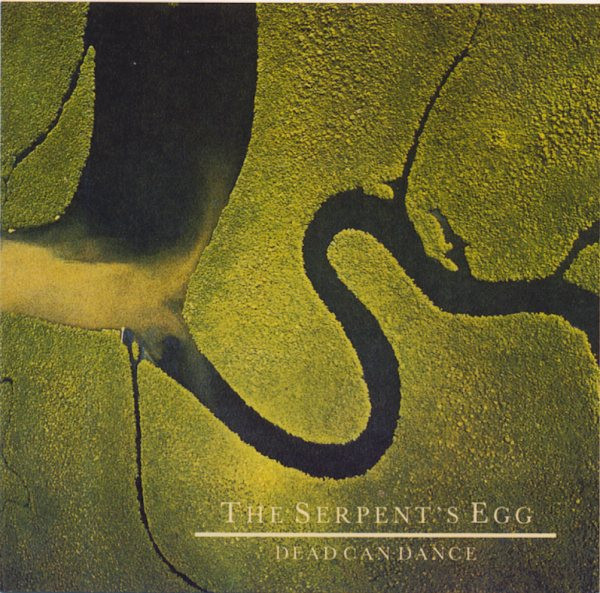

CD
The Serpent's Egg
Dead Can Dance
Media: NM · Sleeve: NM
CA$22.00
Discogs SuggestedCA$24.35
Discogs MedianCA$24.35
Discogs HighCA$24.35
- Physical Copy ID
- BB-CD-0950
- Year
- —
- Label
- 4AD, PIAS Benelux
- Catalog #
- CAD 808 CD, 170.0808.20
- Country
- Benelux
- Genre / Style
- Classical, Folk, World, & Country · Modern Classical, Medieval, Folk